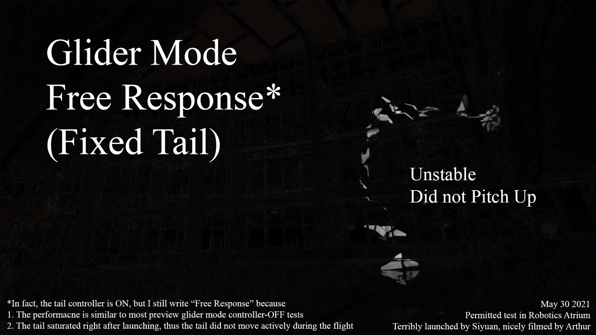

Counter-Intuitive Stability

Video 1. A typical free response on May 8
Early analysis suggested that, compared to the glider mode, the flapping mode should have a higher static margin, and thus has higher longitudinal stability. However, I never truly believe in this counter-intuitive prediction. Moreover, I used to think that flapping mode should also have low lateral stability.
To study the stability, I launched the ornithopter without implementing the tail controller. Surprisingly, 5 out of 6 glider mode tests ended up crashing in similar manners (Video 2):
The lateral stability was unable to counteract the poor single-hand-launch initial condition, thus the ornithopter yawed over to a huge side angle and lost speed. During the free fall, the glider-mode ornithopter regains its speed. However, with its poor longitudinal stability, it did not pitch up.

Video 2. All 6 glider mode tests on May 8 were such a failure that Arthur and I did not even export our temporary video recording. Here is a glider mode test on May 30 that shows a similar failure.
In comparison, 4 out of 8 flapping mode tests turned out to be successful flights. 2 of them even experienced stalling, then float in the air, then aggressively turned the nose down for over 90 degrees, and then start flying (Video 1).